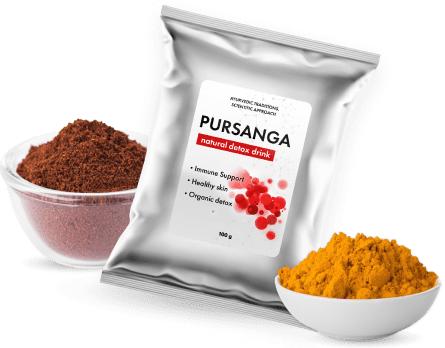

Выводит токсины
Восстанавливает упругость и здоровый цвет кожи
Омолаживает организм
Снижает вред от сигарет, алкоголя, фастфуда и загрязненного воздуха
Устраняет неприятный запах изо рта и от тела
Почему 85% жителей Земли нуждаются в очищении крови и лимфы?
Кровь и лимфа среднестатистического горожанина в 1960-х гг
Кровь и лимфа современного человека

Курение

Некачественные продукты

Плохая питьевая вода
Больше всех страдают кровь и лимфа. Они первыми принимают удар на себя. Шлаки сначала копятся в кровеносных и лимфатических сосудах, а затем разносятся по организму, медленно отравляя его.
Отравление начинается с “невинных” симптомов: одышка, прыщи, дурной запах изо рта и т.д. Если их игнорировать, через 5-7 лет есть риск столкнуться с астмой, бесплодием, инфарктом и даже раком.
Как этого избежать?
Выход один: регулярное очищение крови и лимфы.
Синтетических лекарств для очищения крови не существует. Веками люди использовали
для этих целей травяные сборы.
Авторы легендарной Аюрведы советуют чистить лимфу и кровь порошком куркумы и нима. Их
детокс-свойства были известны древним врачам еще в IV веке до н.э. Куркуму и ним назначали при
отравлении ртутью, свинцом и мышьяком. А современные ученые доказали, что смесь этих растений
выводит из сосудов и более сильные яды: канцерогены, продукты горения табака, осадок от выхлопных
газов и др.
-
По последним научным данным, куркума и ним:
- — на 82% снижают активность токсичных ферментов, которые ежедневно проникают в кровь и лимфу
- — на 71% ускоряют выработку антител к воспалениям и отравлениям и уничтожают их причину
- — на 94% нейтрализуют дегенеративные процессы в кровеносной и лимфатической системах, вызванные хронической интоксикацией.
Мы дополнили традиции индийской народной медицины новыми знаниями. Так появился растворимый напиток
Pursanga на основе куркумы и нима, обогащенный цикорием и витаминами.
“Кофейный” привкус цикория устраняет горечь нима. 1 чашка Pursanga в день подарит вам здоровье,
бодрость и отличное самочувствие уже через 2 недели.
Цикорий — восстанавливает природную вязкость и текучесть крови. Обогащает клетки крови и лимфы инулином, аскорбиновой кислотой, витаминами группы В, регулирует водно-солевой баланс.
Порошок листьев нима — ценный источник нимболида, вещества, которое связывает токсичные примеси в крови и лимфе и нейтрализует их. Нимболид эффективен против 97% известных науке ядовитых веществ, включая канцерогены и соли тяжелых металлов.
Куркума — очищает стенки артерий, вен и капилляров от застарелого токсичного осадка, расщепляет холестериновые бляшки.
Растворите 1 ложку Pursanga в стакане кипятка
Перемешайте и настаивайте 1-2 минуты
В первой половине дня пейте по 1 чашке Pursanga 1-2 раза в день перед едой
Густые и сильные волосы
Чистая кожа без прыщей, покраснений, высыпаний и зуда
Свежее дыхание
Крепкие зубы и ногти

Ровный цвет лица
Здоровый сон

Нормальный пульс и давление
Хороший аппетит и пищеварение
Энергия и бодрость
Высокая устойчивость к нагрузкам
Анри Свик, специалист по семейному здоровью:
“Pursanga — это растворимый напиток для детоксикации крови на основе природных компонентов - нимы и куркумы. Фитонциды цикория, которыми обогащен Pursanga, в 3 раза усиливают действие активных компонентов и придают напитку вкус кофе. Если пить Pursanga 1 раз в день, содержание токсичных примесей в крови снижается на 80-90%. Я рекомендую его не только при наличии видимых симптомов интоксикации крови и лимфы (запах изо рта, выпадение волос, прыщи, одышка и т.д.), но и для профилактики. Особенно если вы живете в большом городе, курите, иногда выпиваете или работаете на вредном производстве”.
Заполните форму заказа
Дождитесь звонка менеджера, уточните детали доставки и оплаты
Получите товар в назначенный срок
{{ old_price }} {{ currency }}
{{ price }} {{ currency }}
“Год назад стало беспокоить давление. Стала хуже спать, пропал аппетит, головные боли почти не прекращались. Сначала списывала все на начало климакса, но врач сказал, что до него мне еще далеко. Затем сдала анализ крови. Оказалось, она сильно засорена - 12 лет жизни в промзоне дали о себе знать. В клинике мне посоветовали попить Pursanga. Курс 1 месяц. Но жизнь стала налаживаться уже через неделю: прошла мигрень, давление постепенно снижается, сплю по 6-7 часов в день непрерывно, не просыпаюсь каждые 2 часа, как раньше. С каждым днем мне все лучше и лучше!”.
— Оливия, 44 года
“Никогда не заморачивался насчет здоровья. Но когда я резко начал лысеть, и меня стало тошнить по утрам, не на шутку испугался. Подумал, что у меня рак. Курить бросил - не помогло. Анализы показали, что онкологии пока нет. Но состояние крови такое, что еще чуть-чуть - и обязательно какая-нибудь страшная болячка вылезет. Стал гуглить средства для очищения крови. Нашел Pursanga. Не скажу, что помог сразу, но через пару недель стало реже тошнить, и волосы сейчас не так сильно лезут. А еще прыщи ушли, которые меня с юности бесили”.
— Бернард, 36 лет
“После переезда в столицу меня буквально осыпало прыщами: на лице, на груди, на спине и даже на ногах. Думала, что это на фоне стресса: другой город, поиски работы и т.д. Но уже через полгода я полностью освоилась на новом месте, но прыщи так и не прошли. Соседка сказала, что это из-за грязного воздуха и плохой воды, посоветовала пить Pursanga. Пила как обычный кофе, каждый день, как написано в инструкции. Уже через 1-1,5 недели прыщей стало заметно меньше. Сейчас остались только на спине и немного на лбу. Уверена, что к концу курса и их не станет!”.
— Линда, 32 года